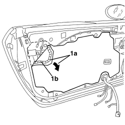

7005A04 FRONT SIDE DOOR WATER GUARD PROTECTION - R.R. OR POSITION WITH DOOR PANEL REMOVED
- Path
- Procedures > 70 FITTINGS > 7005 PASSENGER COMPARTMENT FRONT SIDE DOORS > 7005A FRONT DOOR ASSEMBLY > 7005A04 FRONT SIDE DOOR WATER GUARD PROTECTION - R.R. OR POSITION WITH DOOR PANEL REMOVED
- Kind
- repair procedure (removal / refitting; the operation number is the code)
- Applies to
- all engines; all production periods
- Interactive page
- https://sloeber94.github.io/elrnDB-aBrrSpdr/en/#/946002488
Applies to: all engines; all production periods
 Removing
Removing
 Refitting
Refitting1. Remove the water shield protection (1a), removing the adhesive bead (1b).

Applies to: all engines; all production periods
Refitting
Removing- Check that the new protection is intact and not torn.
- Position the new water shield protection, ensuring that the adhesive bead sticks perfectly.
Check that the water shield protection adheres perfectly along the entire perimeter.
Topics that link to this page (15)
- 5505B11 FRONT DOOR WIRING (ONE) LEFT OR RIGHT - R.R
- 7005A05 FRONT SIDE DOOR WATER GUARD PROTECTION - R.R. OR POSITION
- 7005C10 FRONT DOOR EXTERIOR HANDLE - R.R WITH DOOR PANEL REMOVED
- 7005C11 FRONT SIDE DOOR EXTERIOR HANDLE - R.R
- 7005C41 FRONT SIDE DOOR EXTERIOR HANDLE LOCK CONNECTION LINK - R.R
- 7005D11 LOWERING WINDOW (ONE), LEFT OR RIGHT FOR FRONT SIDE DOOR - CHECK SLIDING - INCLUDES POSITIONING GUIDES, POSITIONING AND FASTENING WINDOW SUPPORT TO CONTROL
- 7005D14 FRONT SIDE DOOR DESCENDING WINDOW GLASS - R.R. WITH DOOR PANEL (AND SUPPORT FRAME) REMOVED
- 7005D15 FRONT SIDE DOOR DESCENDING WINDOW GLASS (ONE) LEFT OR RIGHT - R.R
- 7005D26 FRONT SIDE DOOR DESCENDING WINDOW GLASS SCRAPER (OUTER) (ONE), LEFT OR RIGHT- R.R
- 7005D29 FRONT CHANNEL/SEAL FOR FRONT SIDE DOOR LOWERING WINDOW GLASS (ONE), LEFT OR RIGHT - R.R.
- 7005E91 PARTITION ON ONE FRONT DOOR (LH OR RH) - R.R. WITH DOOR PANEL REMOVED
- 7005M25 FRONT SIDE DOOR ELECTRICALLY OPERATED WINDOW MECHANISM - CHECK POSITION AND FASTENING
- 7005M26 ELECTRIC WINDOW MECHANISM FOR ONE FRONT DOOR LH OR RH - R.R
- 7005N20 FRONT SIDE DOOR LOCK MOTOR/CATCH ASSEMBLY, LEFT OR RIGHT - R.R WITH DOOR PANEL AND SUPPORT FRAME REMOVED
- 7005N21 FRONT SIDE DOOR LOCK MOTOR/LOCK ASSEMBLEY FOR ONE DOOR, LEFT OR RIGHT - R.R.